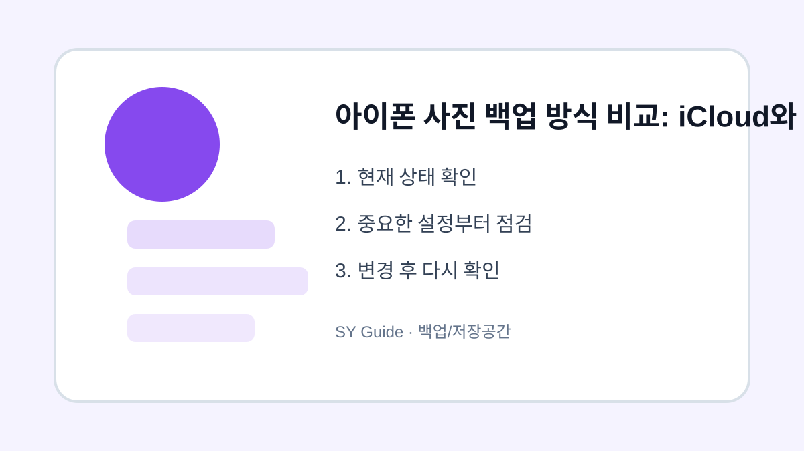

아이폰 사진 백업 방식 비교: iCloud와 PC 백업
아이폰 사진을 iCloud와 PC에 백업할 때 각각의 장단점, 비용, 확인 순서를 비교합니다.

아이폰 사진은 한 번 잃어버리면 되돌리기 어렵습니다. iCloud 사진은 자동으로 동기화되어 편하지만 저장공간 비용이 생길 수 있고, PC 백업은 비용 부담이 적지만 직접 연결하고 관리해야 합니다. 어느 한쪽이 무조건 좋다기보다 사용 습관에 맞게 선택하는 것이 중요합니다.
iCloud 사진의 장단점
iCloud 사진을 켜면 같은 Apple ID를 쓰는 기기에서 사진을 쉽게 볼 수 있습니다. 새 아이폰으로 바꿀 때도 복원이 편합니다. 다만 무료 저장공간이 부족하면 추가 요금제를 써야 하고, 동기화 방식이라 한 기기에서 삭제한 사진이 다른 기기에도 영향을 줄 수 있습니다.
PC 백업의 장단점
PC로 사진을 옮기면 인터넷 상태와 클라우드 용량에 덜 의존합니다. 외장하드까지 함께 쓰면 장기 보관에 유리합니다. 대신 사용자가 직접 날짜별 폴더를 만들고 백업 여부를 확인해야 하므로 관리 습관이 필요합니다.
| 방식 | 장점 | 주의할 점 |
|---|---|---|
| iCloud | 자동 동기화 | 저장공간 비용 |
| PC 백업 | 직접 보관 가능 | 수동 관리 필요 |
| 외장하드 | 장기 보관 유리 | 고장 대비 필요 |
삭제하거나 옮기기 전 마지막 확인
- iCloud 남은 용량 확인하기
- 중요 사진은 PC에도 복사하기
- 삭제 전 다른 기기에서 열리는지 확인하기
- PC 백업은 날짜별 폴더로 정리하기
- 외장 저장장치는 한 곳에만 의존하지 않기
사진 백업은 자동화와 직접 보관을 함께 쓰면 더 안전합니다. iCloud로 일상 백업을 하고, 중요한 사진은 PC나 외장 저장장치에 한 번 더 보관하는 방식이 현실적입니다.
사진 백업 실제 상황 예시
사진 백업 관련 문제는 대부분 한 가지 메뉴만으로 해결되지 않습니다. 알림, 권한, 저장공간, 계정 상태처럼 여러 설정이 연결되어 있기 때문에 현재 상태를 먼저 확인하고 하나씩 바꾸는 방식이 안전합니다. 이렇게 하면 어떤 변경이 실제로 효과가 있었는지도 파악하기 쉽습니다.
사진 백업에서 피해야 할 실수
실수는 대개 급하게 처리할 때 생깁니다. 저장공간이 부족하다고 바로 삭제하거나, 보안이 걱정된다고 모든 권한을 꺼버리면 필요한 기능까지 멈출 수 있습니다. 변경 전후를 비교하고, 중요한 자료나 계정은 공식 도움말을 확인한 뒤 진행하는 것이 좋습니다.
사진 백업 관련 설정을 먼저 확인해야 하는 이유
사진 백업 관련 설정은 단순히 메뉴 하나를 켜고 끄는 문제가 아니라, 실제 사용 흐름에서 어떤 불편을 줄이려는지 먼저 정해야 합니다. 같은 메뉴라도 기기 제조사, 운영체제 버전, 앱 업데이트 상태에 따라 이름이 달라질 수 있으므로 현재 화면을 기준으로 차근차근 확인하는 것이 좋습니다.
사진 백업에서 자주 생기는 실수
많은 사용자가 바로 삭제하거나 초기화하는 방식으로 문제를 해결하려 하지만, 그 전에 현재 상태를 기록해 두면 되돌리기가 쉽습니다. 알림, 권한, 저장공간, 로그인 상태처럼 서로 연결된 항목은 하나씩 바꾼 뒤 실제로 원하는 결과가 나오는지 확인해야 합니다.
사진 백업 점검 후 다시 볼 부분
가족 기기나 업무용 계정에서는 본인에게는 사소한 변경도 다른 사람에게 큰 불편이 될 수 있습니다. 변경 전 백업 여부를 확인하고, 중요한 계정이나 자료가 관련되어 있다면 공식 도움말을 함께 보면서 진행하는 편이 안전합니다.